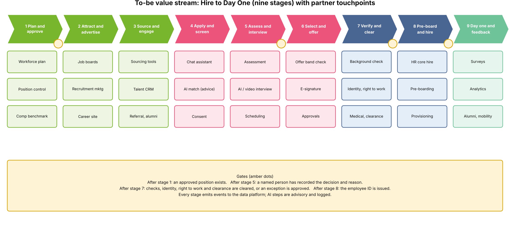

Chapter 10 · Edit this page online ↗
Business Architecture (Phase B)
ADM phase B Business ArchitectureLead streams BusinessSupporting Enterprise, Domain, UI/UX, AI, Industry9P4V V2 ValueStandards TOGAF Phase B
On this page
In brief. Capabilities, the Hire to Day One value stream, processes and the rules that govern them.
10.1 Capability map
Twenty-nine L2 capabilities in seven L1 domains, each with a target maturity and the components that support it.
| L1 domain | L2 capability | Description | Target maturity (1-5) | Supported by |
|---|---|---|---|---|
| Workforce Planning | Headcount and hiring-plan management | Turn the workforce plan into approved positions and a hiring forecast | 4 | C14, C05 |
| Workforce Planning | Labour-market and compensation intelligence | Supply, demand and pay benchmarks per role and country | 3 | C13 |
| Attract and Brand | Employer brand and career site | Branded, multilingual, mobile career experience | 4 | C01 |
| Attract and Brand | Job advertising and distribution | Post to the right boards and channels with budget control | 4 | C11, C12 |
| Attract and Brand | Recruitment marketing and campaigns | Campaigns, events and programmatic advertising | 3 | C12, C07 |
| Source and Engage | Talent sourcing | Find and reach passive talent and alumni | 3 | C15, C07 |
| Source and Engage | Talent relationship management | Pools, nurture journeys and consent-aware outreach | 4 | C07, C10 |
| Source and Engage | Conversational engagement | Answer questions, recommend jobs and capture applications in chat | 4 | C02, C10 |
| Source and Engage | Employee referral | Referral capture, tracking and recognition | 3 | C31, C06 |
| Source and Engage | Internal mobility | Match employees to open roles and gigs | 3 | C27 |
| Assess and Select | Application screening | Knock-out questions, parsing, match advice for recruiters | 4 | C06, C19 |
| Assess and Select | Skills and behavioural assessment | Role-based tests and simulations through partner services | 4 | C16 |
| Assess and Select | Interviewing and scheduling | Structured interviews, scorecards and self-scheduling | 4 | C08, C17, C18 |
| Assess and Select | Selection decision and offer | Compare, approve, offer within pay bands | 4 | C09, C13 |
| Hire and Comply | Background and credential screening | Criminal, education, employment, sanctions and licence checks by country | 4 | C21 |
| Hire and Comply | Identity and right-to-work verification | Prove identity and the right to work before start | 4 | C22 |
| Hire and Comply | Medical fitness and safety clearance | Occupational health, site access and security clearance gates | 4 | C23 |
| Hire and Comply | Offer, contract and e-signature | Generate, sign and archive offers and contracts | 4 | C24, C25 |
| Onboard and Transition | Pre-boarding and onboarding | Tasks, documents and welcome before and after day one | 4 | C26, C43 |
| Onboard and Transition | Hire hand-off to employee record | Create the employee in the HR core with clean data | 5 | C42, C32 |
| Onboard and Transition | Crossboarding and offboarding | Moves, exits, alumni and rehire eligibility | 3 | C27, C28 |
| Experience and Insight | Candidate and manager experience measurement | Pulse surveys and sentiment at key moments | 3 | C29 |
| Experience and Insight | Recruiting analytics | Funnel, speed, quality, cost and source reporting | 4 | C36, C37 |
| Experience and Insight | Diversity, equity and inclusion insight | Inclusive job language and funnel parity monitoring | 3 | C30 |
| Governance, AI and Platform | Responsible AI governance | Register, test, monitor and evidence every AI use | 4 | C20, C19 |
| Governance, AI and Platform | Privacy, consent and retention | Lawful basis, consent, subject requests, deletion | 5 | C40 |
| Governance, AI and Platform | Partner and integration management | Onboard, monitor and exit partners safely | 4 | C32, C33, C35 |
| Governance, AI and Platform | Identity and access | SSO, provisioning, partner credentials | 5 | C38, C39 |
| Governance, AI and Platform | Security monitoring and audit | Logging, detection and evidence for audit | 4 | C41 |
10.2 Value stream
Nine stages, four gates. Partners appear as touchpoints inside stages; they never change the gate rules.

| Stage | Trigger / entry | Key activities | Stakeholders | Value item | Exit criterion |
|---|---|---|---|---|---|
| 1 Plan and approve | Workforce plan or backfill need | Confirm position and budget; open requisition; choose template and hiring team | Hiring manager, finance, TA partner | Approved, funded requisition | Requisition approved and linked to a position |
| 2 Attract and advertise | Requisition approved | Write inclusive job ad; set pay range; post to career site and selected boards; start campaigns | Recruiter, marketing, job-board partners | Right audience sees the job | Job live on selected channels |
| 3 Source and engage | Job live | Search talent pools, alumni and referrals; chat with prospects; nurture | Sourcer, referrers, candidates | Qualified pipeline | Pipeline target met |
| 4 Apply and screen | Candidate applies or is added | Capture consent; parse; knock-out questions; match advice; recruiter review | Candidate, recruiter | Fair, fast first decision | Screen decision recorded with reason |
| 5 Assess and interview | Candidate shortlisted | Order assessments; AI or live interviews; scorecards; calibration | Hiring manager, interview panel, assessment and interview partners | Evidence-based comparison | All required scorecards and assessment results in |
| 6 Select and offer | Panel decision | Check pay band; approve; generate offer; e-sign | Hiring manager, compensation, HR business partner | Accepted offer | Offer signed |
| 7 Verify and clear | Offer accepted | Background, identity, right to work, medical fitness, clearance (by country and role) | Candidate, check providers, HSE, security | Safe and compliant hire | All mandatory checks cleared or exception approved |
| 8 Pre-board and hire | Checks cleared | Collect documents; create the employee record; assign tasks; provision access | HR operations, IT, manager | Ready employee record | Employee ID issued and start date confirmed |
| 9 Day one and feedback | Start date | Welcome; hand over to onboarding and learning; survey; close requisition; feed analytics | New hire, manager, TA ops | Productive start and learning loop | First-week survey done; requisition closed; data in analytics |
10.3 Process catalogue
| ID | Process | Level | Owner | Trigger | Output | Systems |
|---|---|---|---|---|---|---|
| PR-01 | Create and approve requisition | L2 | Hiring manager | Approved position or backfill | Approved requisition | C14, C05, C42 |
| PR-02 | Publish job and manage distribution | L2 | Recruiter | Requisition approved | Live postings with tracking | C11, C12, C01 |
| PR-03 | Source and nurture talent | L2 | Sourcer | Open requisition or pool strategy | Engaged prospects | C15, C07, C10 |
| PR-04 | Receive and screen applications | L2 | Recruiter | Application received | Screened shortlist with reasons | C06, C19, C02 |
| PR-05 | Order and receive assessments | L3 | Recruiter | Candidate reaches assessment stage | Assessment result attached | C16, C32 |
| PR-06 | Run AI or live interview | L3 | Interview coordinator | Candidate invited | Interview record and scorecard | C17, C18, C08 |
| PR-07 | Calibrate and decide | L2 | Hiring manager | Interviews complete | Selection decision | C08, C06 |
| PR-08 | Build and approve offer | L2 | Recruiter | Selection decision | Approved offer within band | C09, C13 |
| PR-09 | Sign offer and contract | L2 | Recruiter | Offer approved | Signed offer | C24, C25 |
| PR-10 | Run background and credential checks | L3 | TA operations | Offer accepted | Check outcome per package | C21, C32 |
| PR-11 | Verify identity and right to work | L3 | TA operations | Offer accepted | Verified identity and permit status | C22 |
| PR-12 | Clear medical fitness and safety | L3 | HSE coordinator | Offer accepted for safety-critical role | Fit-for-role flag | C23 |
| PR-13 | Hand off hire to employee record | L2 | HR operations | All gates cleared | Employee created in HR core | C42, C32, C35 |
| PR-14 | Pre-board and provision | L2 | HR operations | Employee created | Tasks complete; accounts ready | C26, C43, C38 |
| PR-15 | Handle consent and data-subject requests | L2 | Privacy office | Consent change or request | Request closed in time | C40, C06 |
| PR-16 | Retain, anonymise or delete data | L2 | Privacy office | Retention date reached | Data anonymised or deleted | C40, C36 |
| PR-17 | Monitor AI use and bias | L2 | AI governance lead | Monthly and on model change | Bias report and decisions | C20, C19 |
| PR-18 | Onboard a new partner | L2 | Partner manager | Approved selection | Partner live with tests passed | C32, C33, C39 |
| PR-19 | Monitor integrations and incidents | L2 | Integration lead | Alert or schedule | Resolved incidents; SLA report | C32, C41 |
| PR-20 | Exit or replace a partner | L2 | Partner manager | Contract end or failure | Replacement live; data returned | C32, C35, C36 |
| PR-21 | Match internal candidates | L3 | Internal mobility lead | Requisition opened | Internal shortlist | C27, C06 |
| PR-22 | Run candidate experience survey | L3 | TA operations | Stage milestone | Scores and actions | C29, C36 |
| PR-23 | Report and improve | L2 | TA operations lead | Weekly and monthly | Dashboards; improvement backlog | C36, C37 |
10.4 Business rules
| ID | Rule | Type | Source | Enforced by |
|---|---|---|---|---|
| BRL-01 | A requisition cannot be opened without an approved position or an approved exception. | Constraint | Policy | C05 |
| BRL-02 | Pay range on a job ad and offer must sit inside the approved band for grade and country. | Validation | Policy | C09, C13 |
| BRL-03 | An application is accepted only after the required privacy notice is shown and consent is recorded for the country. | Compliance | Regulation | C01, C40 |
| BRL-04 | No candidate is rejected or advanced on an AI score alone; a named person records the decision and reason. | AI control | Policy, regulation | C06, C20 |
| BRL-05 | Every AI-assisted step records model, version, inputs used and the human decision. | AI control | Policy | C19, C20 |
| BRL-06 | A candidate may ask for a human review of any automated step; the request is answered within [10] working days. | AI control | Regulation | C20, C40 |
| BRL-07 | Assessments must be job-related and validated for the role family; unvalidated tests need written approval. | Constraint | Policy | C16 |
| BRL-08 | Assessment and interview accommodations are offered to every candidate and logged. | Compliance | Regulation | C16, C17 |
| BRL-09 | Interview recordings and transcripts are kept [6] months unless a longer period is required by law, then deleted. | Retention | Policy, regulation | C17, C40 |
| BRL-10 | Background checks start only after an accepted offer and signed consent, unless a role-specific law requires earlier. | Workflow | Policy, regulation | C21, C06 |
| BRL-11 | The hiring system stores check outcome and date, never raw criminal-record detail. | Data minimisation | Policy | C21, C35 |
| BRL-12 | Adverse decisions based on a check follow the local pre-adverse and adverse notice steps. | Compliance | Regulation | C21, C10 |
| BRL-13 | Identity and right-to-work must be verified before the start date; no access is provisioned before. | Constraint | Regulation | C22, C43 |
| BRL-14 | Safety-critical roles need a fit-for-role flag and safety induction booking before start. | Constraint | HSE policy | C23, C26 |
| BRL-15 | Sanctions and conflict-of-interest screening applies to all senior and procurement-facing roles. | Compliance | Regulation | C21 |
| BRL-16 | An offer is released only after all approval levels are complete and pay band is validated. | Workflow | Policy | C09 |
| BRL-17 | Signed offers are archived with the audit certificate and linked to the candidate record. | Retention | Policy | C24, C25 |
| BRL-18 | The employee record is created only when mandatory checks are cleared or an exception is approved by the named authority. | Constraint | Policy | C42, C32 |
| BRL-19 | Unsuccessful candidate data is anonymised after [12] months by default; shorter or longer by country table. | Retention | Regulation | C40 |
| BRL-20 | Candidate data is processed only in approved regions; transfers need a recorded legal basis. | Compliance | Regulation | C40, C32 |
| BRL-21 | Each partner has scoped credentials; credentials rotate at least every [90] days. | Security | Policy | C39, C38 |
| BRL-22 | Webhook calls are verified by signature and are idempotent; failed calls retry then go to a dead-letter queue. | Integration | Standard | C33, C32 |
| BRL-23 | Internal candidates are shown open roles at the same time as, or before, external posting where policy requires. | Workflow | Policy | C27, C11 |
| BRL-24 | Job ads are checked for inclusive language before publication. | Validation | Policy | C30, C05 |
| BRL-25 | A partner cannot go live until contract tests, security review and a data-return clause are complete. | Constraint | Policy | C32 |
10.5 Organisation and roles
Process owner: Head of Global Talent Acquisition. Regional TA leads own local variants. HSE and Occupational Health own clearance rules. Legal and Privacy own consent, retention and AI rules. The Enterprise Architecture Office owns the partner capability interfaces.
10.6 RACI
| Activity | Business owner | Business analyst | Enterprise architect | Data steward | Security | Finance | Delivery lead |
|---|---|---|---|---|---|---|---|
| Approve scope, waves and partner list | A | R | C | C | C | C | R |
| Maintain requirements and fit-gap | A | R | C | C | I | I | R |
| Approve canonical model and codes | C | R | A | R | I | I | C |
| Select a partner using the scorecard | A | R | R | C | C | R | C |
| Approve contract data-return and audit terms | C | I | C | C | R | A | I |
| Design and test partner integration | C | C | A | C | R | I | R |
| Approve AI use and bias results | A | C | R | R | C | I | I |
| Approve consent, retention and region map | A | C | C | R | R | I | I |
| Approve security design and credentials | I | I | C | C | A | I | R |
| Go-live readiness decision | A | R | C | C | C | C | R |
| Quarterly partner and release review | A | R | R | C | C | C | R |
| Annual partner exit test | A | C | R | C | R | I | R |
| Benefit tracking and KPI review | A | R | C | C | I | R | I |
10.7 BIZBOK view
The BIZBOK ten-element example for this programme is in Chapter 9.